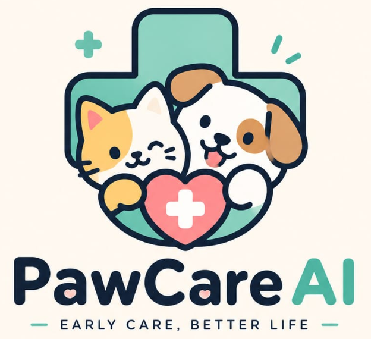

01
Amati Gejala
Foto bagian fisik yang bermasalah dan catat perubahan perilaku anabul secara teliti.
Triase medis instan berbasis bukti ilmiah veteriner. Menganalisis kondisi fisik anabul & gejala darurat dalam < 5 detik.
Panduan darurat singkat yang paling sering dialami anabul di rumah.
Tiga langkah sederhana untuk mengambil keputusan yang lebih tenang saat anabul menunjukkan gejala.
Foto bagian fisik yang bermasalah dan catat perubahan perilaku anabul secara teliti.
AI memproses ciri visual, tingkat urgensi, serta kemungkinan risiko berdasarkan jurnal SINTA.
Lakukan pertolongan pertama di rumah atau segera hubungi klinik vet terdekat saat kondisi kritis.


Panduan singkat untuk membantu kamu mengamati kondisi anabul sebelum memutuskan langkah berikutnya.
Inovasi triase medis anabul berbasis kecerdasan buatan multi-modal dan literasi ilmiah veteriner terakreditasi.
Banyak pemilik anabul panik saat hewan peliharaannya sakit dan secara tidak sengaja memberikan obat manusia yang berakibat fatal (seperti Paracetamol pada kucing). PawCare AI hadir sebagai jembatan pertolongan pertama instan untuk memandu tindakan yang aman sebelum dibawa ke klinik dokter hewan.

Model agen inferensi cerdas yang mengajukan pertanyaan diferensial interaktif untuk mengonfirmasi gejala fisik secara bertahap.
Dilengkapi sistem peringatan keras terhadap obat berbahaya manusia dan mengutamakan keselamatan anabul di atas segalanya.
Integrasi langsung pencarian klinik dokter hewan 24 jam terdekat saat status triase menunjukkan kondisi kritis atau darurat.
Karya inovasi AI & Vibe Coding karya mahasiswa Institut Teknologi PLN (ITPLN). Didedikasikan untuk meningkatkan literasi kesehatan hewan peliharaan di Indonesia melalui teknologi kecerdasan buatan multi-modal.
Upload foto atau tekan tombol preset untuk melihat hasil analisis live.
Jawab pertanyaan untuk mempersempit kemungkinan penyakit
Memuat pertanyaan...
PERINGATAN MEDIS: Dilarang keras memberikan obat manusia (Paracetamol/Panadol) kepada kucing atau anjing karena racun berakibat fatal!
Disclaimer: Hasil analisis ini adalah panduan triase awal dan bukan pengganti diagnosis dokter hewan. Diagnosis pasti tetap memerlukan pemeriksaan klinis langsung oleh Dokter Hewan berlisensi.